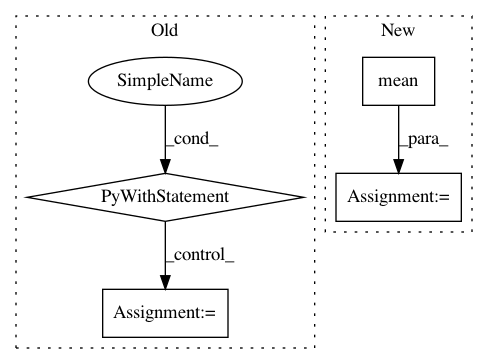

254fe1c943375153033ce020efbd73c7893094c8,test/examples/test_whitened_svgp_gp_regression.py,TestSVGPRegression,test_regression_error,#TestSVGPRegression#Any#,58
Before Change
model.train()
likelihood.train()
optimizer = optim.Adam([{"params": model.parameters()}, {"params": likelihood.parameters()}], lr=0.01)
with gpytorch.settings.skip_logdet_forward(skip_logdet_forward):
for _ in range(170):
optimizer.zero_grad()
output = model(train_x)
loss = -mll(output, train_y)
loss.backward()
optimizer.step()
for param in model.parameters():
self.assertTrue(param.grad is not None)
self.assertGreater(param.grad.norm().item(), 0)
for param in likelihood.parameters():
After Change
likelihood.eval()
test_preds = likelihood(model(train_x)).mean.squeeze()
mean_abs_error = torch.mean(torch.abs(train_y[0, :] - test_preds[0, :]) / 2)
mean_abs_error2 = torch.mean(torch.abs(train_y[1, :] - test_preds[1, :]) / 2)
self.assertLess(mean_abs_error.item(), 1e-1)
self.assertLess(mean_abs_error2.item(), 1e-1)
def test_regression_error_cuda(self):
In pattern: SUPERPATTERN
Frequency: 3
Non-data size: 4
Instances
Project Name: cornellius-gp/gpytorch
Commit Name: 254fe1c943375153033ce020efbd73c7893094c8
Time: 2019-02-01
Author: balandat@fb.com
File Name: test/examples/test_whitened_svgp_gp_regression.py
Class Name: TestSVGPRegression
Method Name: test_regression_error
Project Name: tensorflow/models
Commit Name: 8da4857396fcedb1abd19a08cd4de40d16c7bc50
Time: 2020-08-17
Author: 30733558+plakal@users.noreply.github.com
File Name: research/audioset/yamnet/yamnet_test.py
Class Name: YAMNetTest
Method Name: clip_test
Project Name: analysiscenter/batchflow
Commit Name: 327235adabdcdff566ff74413795091353dcfc1f
Time: 2019-10-16
Author: 53620809+cdtn@users.noreply.github.com
File Name: batchflow/models/metrics/utils.py
Class Name:
Method Name: infmean